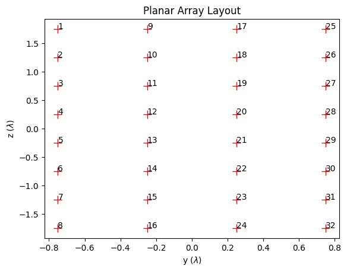

Antenna Arrays#
- class sionna.rt.AntennaArray(antenna_pattern: sionna.rt.antenna_pattern.AntennaPattern, normalized_positions: mitsuba.Point3f)[source]#
Class implementing an antenna array
An antenna array is composed of antennas which are placed at different positions. All antennas share the same antenna pattern, which can be single- or dual-polarized.
- Parameters:
antenna_pattern (sionna.rt.antenna_pattern.AntennaPattern) – Antenna pattern to be used across the array
normalized_positions (mitsuba.Point3f) – Array of relative positions of each antenna with respect to the position of the radio device, normalized by the wavelength. Dual-polarized antennas are counted as a single antenna and share the same position.
Methods
- positions(wavelength: float) mitsuba.Point3f[source]#
Get the relative positions of all antennas (dual-polarized antennas are counted as a single antenna and share the same position).
Positions are computed by scaling the normalized positions of antennas by the
wavelength.- Parameters:
wavelength (float) – Wavelength [m]
- Returns:
Relative antenna positions \((x,y,z)\) [m]
- rotate(wavelength: float, orientation: mitsuba.Point3f) mitsuba.Point3f[source]#
Computes the relative positions of all antennas rotated according to the
orientationDual-polarized antennas are counted as a single antenna and share the same position.
Positions are computed by scaling the normalized positions of antennas by the
wavelengthand rotating byorientation.- Parameters:
wavelength (float) – Wavelength [m]
orientation (mitsuba.Point3f) – Orientation [rad] specified through three angles corresponding to a 3D rotation as defined in (3)
- Returns:
Rotated relative antenna positions \((x,y,z)\) [m]
Attributes
- property antenna_pattern#
Get/set the antenna pattern
- Type:
- property array_size#
Number of antennas in the array. Dual-polarized antennas are counted as a single antenna.
- Type:
- property normalized_positions#
Get/set array of relative normalized positions \((x,y,z)\) [\(\lambda\)] of each antenna. Dual-polarized antennas are counted as a single antenna and share the same position.
- Type:
- class sionna.rt.PlanarArray(*, num_rows: int, num_cols: int, vertical_spacing: float = 0.5, horizontal_spacing: float = 0.5, pattern: str, **kwargs)[source]#
Class implementing a planar antenna array
The antennas of a planar array are regularly spaced, located in the y-z plane, and numbered column-first from the top-left to bottom-right corner.
- Parameters:
num_rows (int) – Number of rows
num_cols (int) – Number of columns
vertical_spacing (float) – Vertical antenna spacing [multiples of wavelength]
horizontal_spacing (float) – Horizontal antenna spacing [multiples of wavelength]
pattern (str) – Name of a registered antenna pattern factory method (“iso” | “dipole” | “hw_dipole” | “tr38901”)
Keyword Arguments#
- polarization
str Name of a registered polarization (“V” | “H” | “VH” | “cross”)
- polarization_model:
str Name of a registered polarization model (“tr38901_1” | “tr38901_2”). Defaults to “tr38901_2”.
**kwargs:AnyDepending on the chosen antenna pattern, other keyword arguments must be provided. See the Developer Guide for more details.
Example#
from sionna.rt import PlanarArray array = PlanarArray(num_rows=8, num_cols=4, pattern="tr38901", polarization="VH") array.show()

- positions(wavelength: float) mitsuba.Point3f#
Get the relative positions of all antennas (dual-polarized antennas are counted as a single antenna and share the same position).
Positions are computed by scaling the normalized positions of antennas by the
wavelength.- Parameters:
wavelength (float) – Wavelength [m]
- Returns:
Relative antenna positions \((x,y,z)\) [m]
- rotate(wavelength: float, orientation: mitsuba.Point3f) mitsuba.Point3f#
Computes the relative positions of all antennas rotated according to the
orientationDual-polarized antennas are counted as a single antenna and share the same position.
Positions are computed by scaling the normalized positions of antennas by the
wavelengthand rotating byorientation.- Parameters:
wavelength (float) – Wavelength [m]
orientation (mitsuba.Point3f) – Orientation [rad] specified through three angles corresponding to a 3D rotation as defined in (3)
- Returns:
Rotated relative antenna positions \((x,y,z)\) [m]
- show()[source]#
Visualizes the planar antenna array
Antennas are depicted by markers that are annotated with the antenna number. The marker is not related to the polarization of an antenna.
Output#
- :
matplotlib.pyplot.Figure Figure depicting the antenna array
- :
- property antenna_pattern#
Get/set the antenna pattern
- Type:
- property array_size#
Number of antennas in the array. Dual-polarized antennas are counted as a single antenna.
- Type:
- property normalized_positions#
Get/set array of relative normalized positions \((x,y,z)\) [\(\lambda\)] of each antenna. Dual-polarized antennas are counted as a single antenna and share the same position.
- Type:
{kind=link}